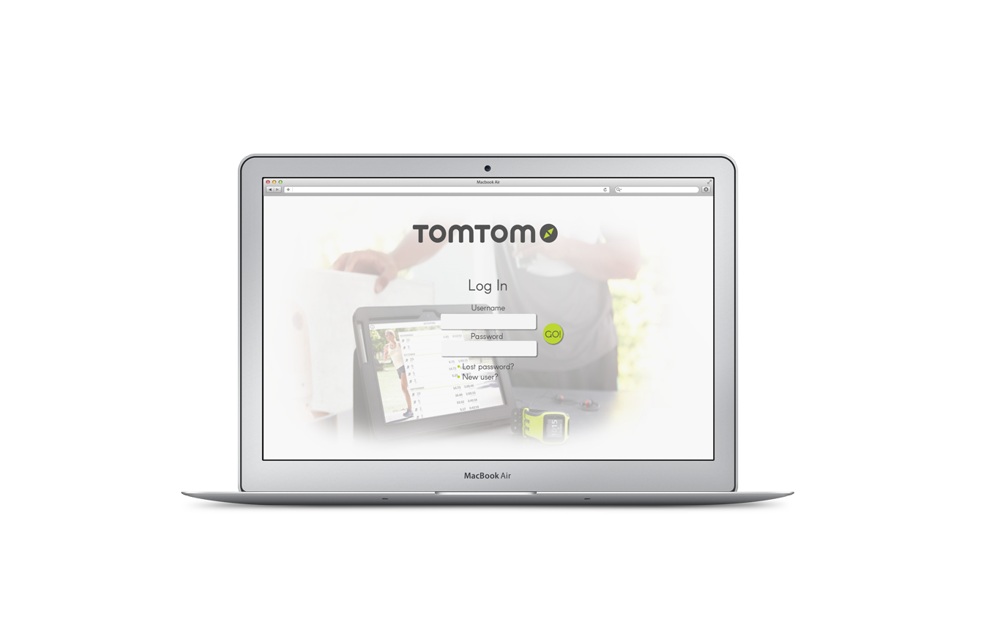
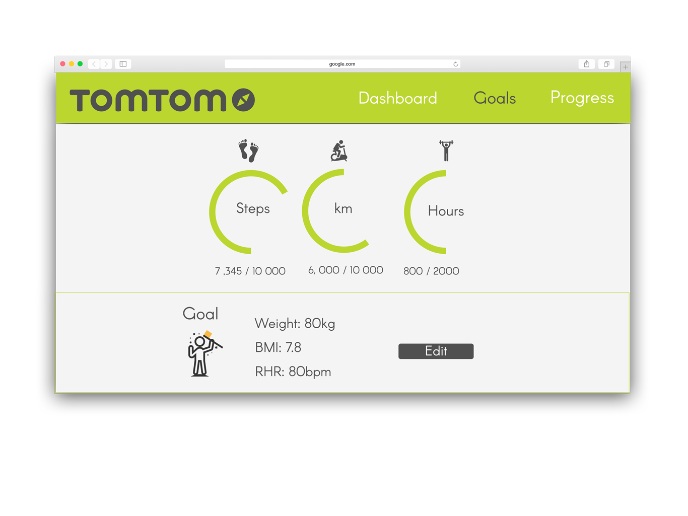
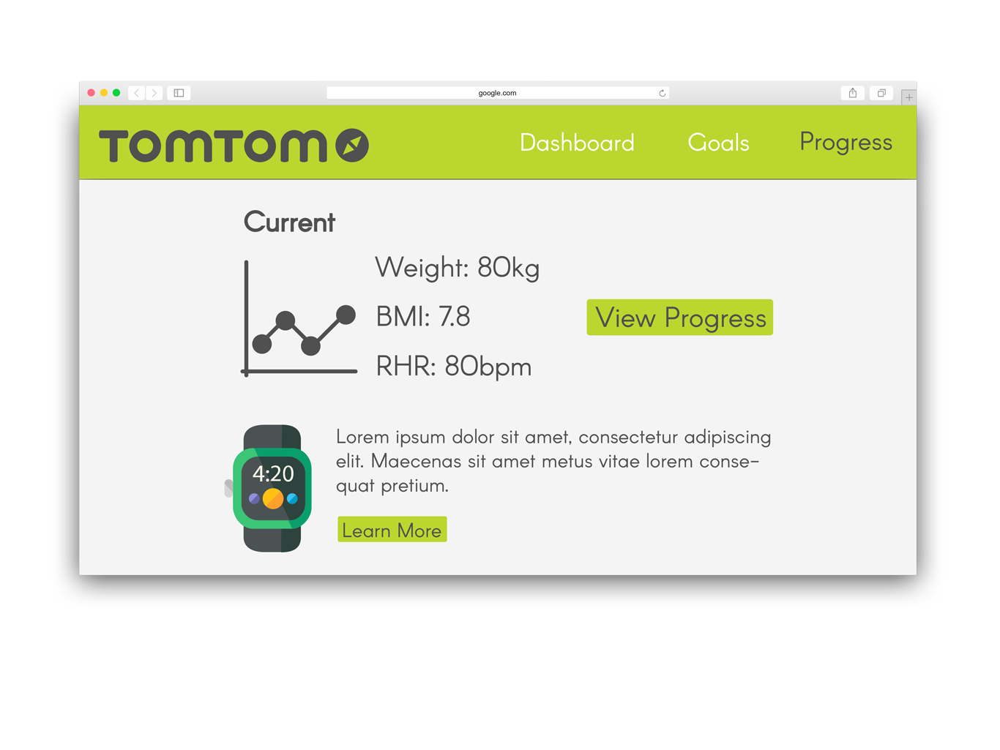
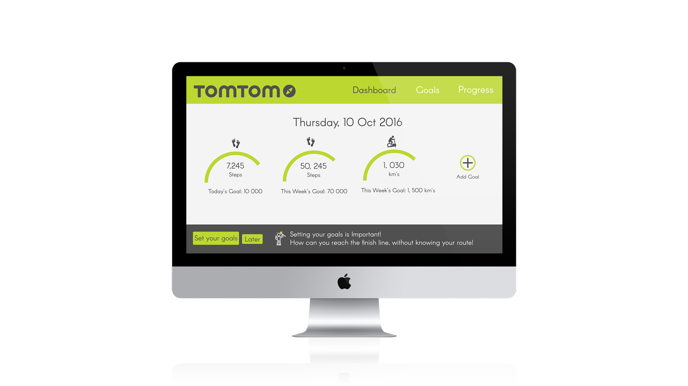

Loading...
Tom Tom
Jade/Sass Dashboard
Year 2016

SUMMARY
The TomTom Watch dashboard was a class task where we had to use Jade/Sass to create a dashboard where the user was able to change the dashboard theme. I had chosen TomTom watches to use as the company for my project. Unfortunately I was not too impressed with the original look and feel of their dashboard, nor the logo and Brand identity. So I thought I'd redesign that too. The concept I came up with was strongly based on their strong promotion of their geolocation wrist watches and the bold colors they chose. The user is able to change their dashboard theme, according to the watch that they purchased.


